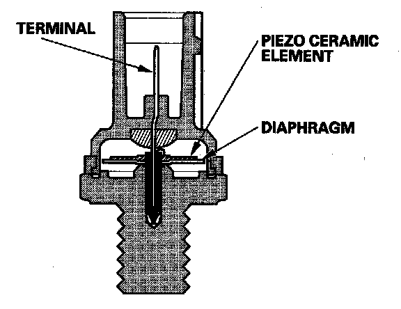

Operation CHARM
: Car repair manuals for everyone.
Home
>>
Acura
>>
2007
>>
MDX V6-3.7L
>>
Repair and Diagnosis
>>
Powertrain Management
>>
Computers and Control Systems
>>
Knock Sensor
>>
Description and Operation
Knock Sensor: Description and Operation

Knock Sensor
The knock control system adjusts the ignition timing to minimize knock.